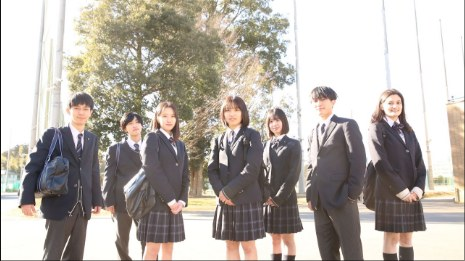

視察・委員会
名古屋大学教育学部附属中・高等学校を視察
2026年7月3日、SSH指定校の名古屋大学教育学部附属中・高等学校の「研究成果発表会」を視察しました。同校は全教科で「協同的探究学習」を展開しています。当日は、中学の探究学習における生徒同士…
くわしく →08 / 09 — SCHOOL VISITS
他校に学び、本校の取り組みを見ていただく。
RECORD

REPORTS
2026年7月3日、SSH指定校の名古屋大学教育学部附属中・高等学校の「研究成果発表会」を視察しました。同校は全教科で「協同的探究学習」を展開しています。当日は、中学の探究学習における生徒同士…
くわしく →


2026年6月24日、茨城県議会 防災環境産業委員会の皆様が本校を訪れ、SSH活動の視察および生徒との意見交換会が行われました。 視察では、本校の「SDGsラボ」に所属する生徒たちが、各地の…
くわしく →2026年6月20日、SSH指定校の東京都立富士高等学校・附属中学校の「第1回探究発表会」を視察しました。同校では「6年間一気通貫した探究活動」を掲げ、中学から高校まで段階的なカリキュラムを展…
くわしく →